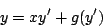
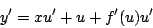
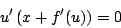
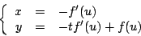
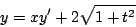
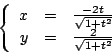

|
|
|
|
|Instituto Tecnológico de Costa Rica|Escuela de Matemática| M. Sc. Geovanni Figueroa M. |
|
|
Ecuación de Clairaut
Suponga que
Observe que esta ecuación es una familia de curvas
uniparamétricas con parámetro

La cual es la ecuación diferencial buscada. A este tipo de ecuaciones se les conoce como ecuaciones de Clairaut 1.3.
El interés que presenta este tipo de ecuación se debe al hecho de que tiene como solución a una familia de rectas. Además, la envolvente, es decir, la curva cuyas tangentes están dadas por la familia , también es solución, en este caso una solución singular, de la ecuación de Clairaut.
Demostración
Derivando ambos lados respecto a

de donde obtenemos que

Surgen dos casos
Caso 1:
Observe que la solución general se obtiene simplemente
sustituyendo en la ecuación 1.18
Cso 2:

Estas son las ecuaciones paramétricas de una curva donde es el parámetro. Observe que esta solución no es un caso particular de la solución general, por lo que se trata de una solución singular.
Ejemplo:

Solución:

Observe que estas son las ecuaciones paramétricas de una
círculo de radio 2,
Subsecciones
|